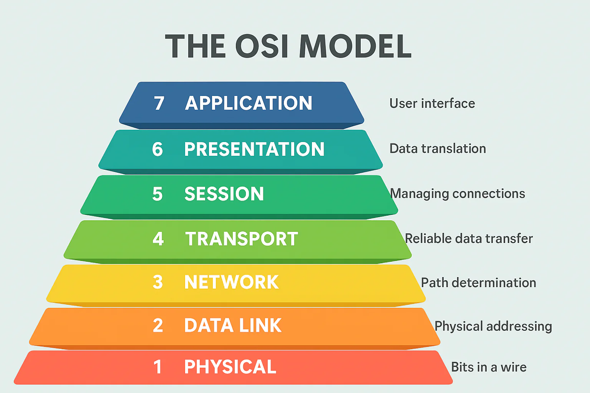

Examine packet-switched networks (PAN, LAN, WAN), network topologies, the 7-layer OSI and 4-layer TCP/IP models, malware threats, layered defenses, and ethical hacking under Philippine law.
Learning Objectives
Distinguish PAN, LAN, and WAN networks alongside Star, Mesh, Bus, and Ring topologies.
Map protocols (HTTP/HTTPS, DNS, TCP, UDP, IP, Ethernet) across the 7-layer OSI and 4-layer TCP/IP models.
Key Reminder: Network Security Warning: Plain HTTP transmits data in unencrypted cleartext. Always enforce HTTPS when transmitting passwords or personal records.
Network Types, Topologies & Layered Models
The Internet uses packet switching to break data into addressed packets routed independently across routers. Network scales include PAN (Bluetooth), LAN (single building/campus), and WAN (cities/countries). Topologies include Star (central switch), Mesh (redundant self-healing links), Bus (single backbone), and Ring.

The 7-Layer OSI Reference Model and corresponding TCP/IP network layers.
OSI Layer
Primary Function
TCP/IP Layer & Protocols
7. Application / 6. Presentation / 5. Session
User services, encryption, translation, session control
Application Layer: HTTP/HTTPS, DNS, FTP, SMTP
4. Transport
End-to-end delivery, error checking, flow control
Transport Layer: TCP (reliable), UDP (fast)
3. Network
Logical IP addressing & cross-network routing
Internet Layer: IP (IPv4 / IPv6)
2. Data Link / 1. Physical
MAC framing, switches, physical cables/radio bits
Network Access Layer: Ethernet, Wi-Fi, Fiber
Quiz 3.1: Connectivity, Network Topologies, OSI & TCP/IP
Key Reminder: Legal Warning (RA 10175): Penetration testing is strictly legal only with explicit written authorization from the system owner under the Philippine Cybercrime Prevention Act of 2012.
Common Malware & Social Engineering Threats
Computer Virus: Attaches to a host file and requires human action to spread.
Network Worm: Self-replicates automatically across networks without human interaction.
Trojan Horse: Disguises itself as legitimate software to open a hidden backdoor.
Ransomware: Encrypts victim files and demands ransom for the decryption key.
Phishing: Deceptive emails/websites impersonating trusted institutions to steal credentials.
Layered Security Controls
Defense-in-depth combines Network Firewalls (traffic filtering), Heuristic Antivirus, Cryptographic Encryption (scrambling plaintext to ciphertext), Offline/Cloud Backups, Multi-Factor Authentication (MFA), and the Principle of Least Privilege (granting users only minimum required permissions).
Kurose, J. F., & Ross, K. W. (2021). Computer Networking: A Top-Down Approach (8th ed.). Pearson.
National Institute of Standards and Technology (NIST). (2024). The NIST Cybersecurity Framework (CSF) 2.0. U.S. Department of Commerce. https://www.nist.gov/cyberframework
Stallings, W. (2023). Cryptography and Network Security: Principles and Practice (8th ed.). Pearson.
Keep Your Study Streak Alive!
Read through each lesson and test your understanding with the inline quiz at the end. Click Mark Lesson Completed to update your progress bars and daily study streak!